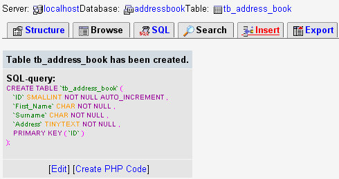
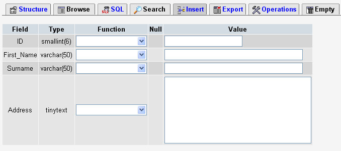
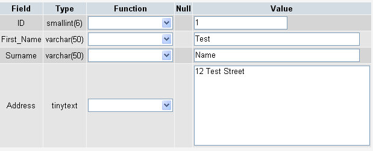
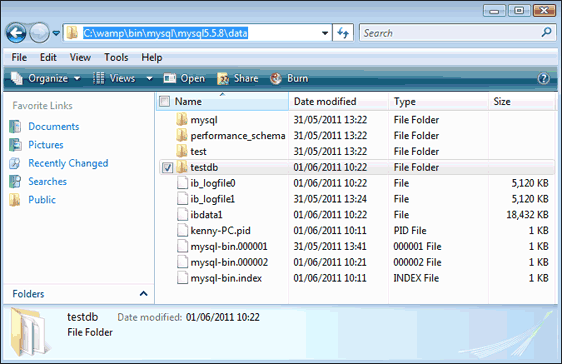
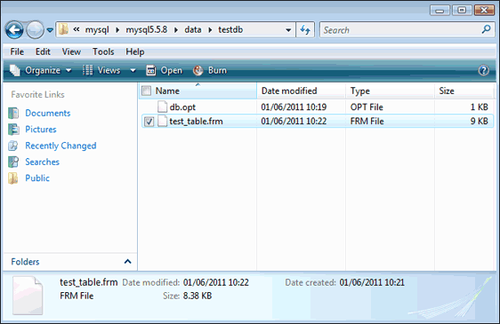

phpMyAdmin Tables - Adding Records
To insert a new record to the table you created in the previous section, select the Insert link at the top of the page:

When you click on Insert, you'll be taken to a new area. This one:

As you can see, our four fields are there: ID, First_Name, Surname, and Address. But look at the lengths of the textboxes under the Value. The sizes are determined by the length of the Fields. The address area is a lot bigger, because we used TINYTEXT.
To enter a new record in your table, you type your data in the textboxes under the Value heading. Go ahead and enter the following information for the Value textboxes:
ID: 1
First_Name: Test
Surname: Name
Address: 12 Test Street
Your screen should then look like this:

Finally, click the Go button at the bottom of the screen to create the Row in your table. You will be returned to the Structure screen.
And that's it - you now have a database to work with. To see where it has been saved, navigate to your Wamp folder on your hard drive. Double click the folder called bin\mysql\mysqlx.x.x. Inside this folder will be one called data. This is where all of your databases are stored:

Notice the folder name in the image above: testDB. This is the same as the database name, and is automatically created for you for all new databases. When you double click this folder, you should see a few files there:

Notice the files names - they are the same as the tables you create. In other words, they ARE the tables.
If you have PHP web space, you can upload this folder and its contents to your data folder, and you should then be able to access the tables in the database with PHP code.
We can move on to doing just that - accessing this database with some PHP code.